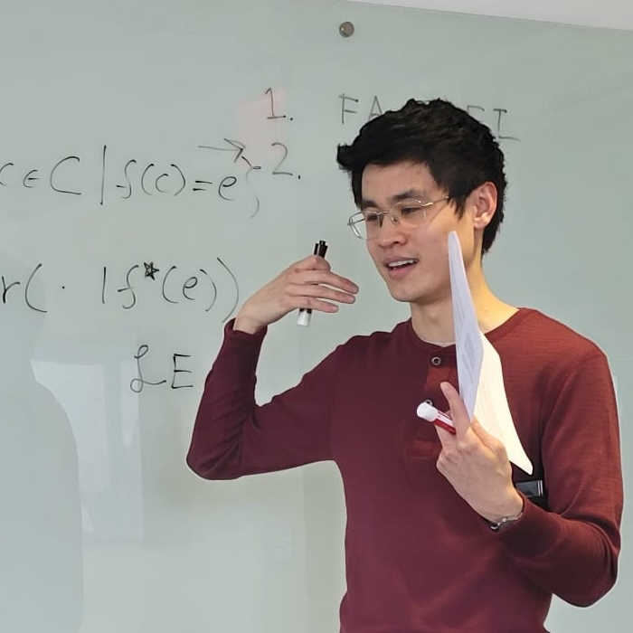

adrian.liu at rutgers.edu |
[cv]
|
[philpeople]
I'm a PhD candidate at Rutgers Philosophy, advised by Ted Sider, Liz Camp, Juan Comesaña, and Kevin Dorst.
I work in epistemology and metaphysics, on meaning and evidence and their relevance for social philosophy.
I'm graduate co-director of PIKSI-Boston for 2025 and 2026. I convene the Epistemology Reading Group at Rutgers and am conference manager for the 2026 Rutgers Epistemology Conference.
Rutgers — New Brunswick
Department of Philosophy
106 Somerset St, 5th Floor
New Brunswick, NJ 08901
© 2025 Adrian Liu | this page updated 2025-05-21